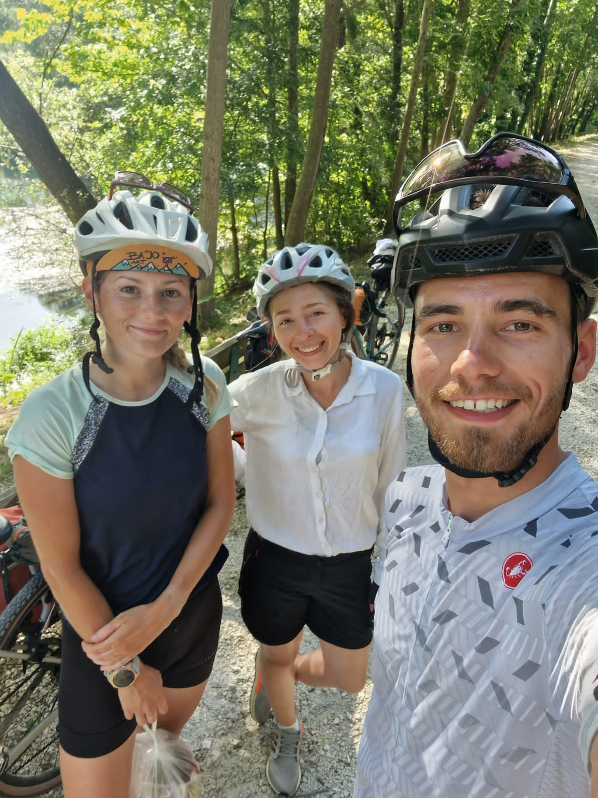
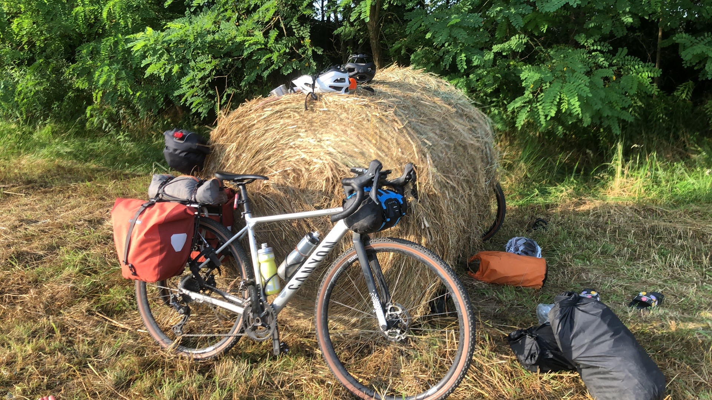
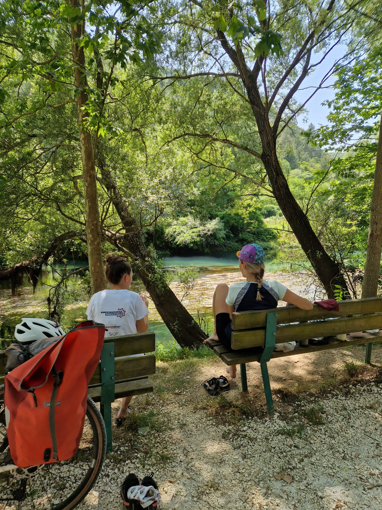
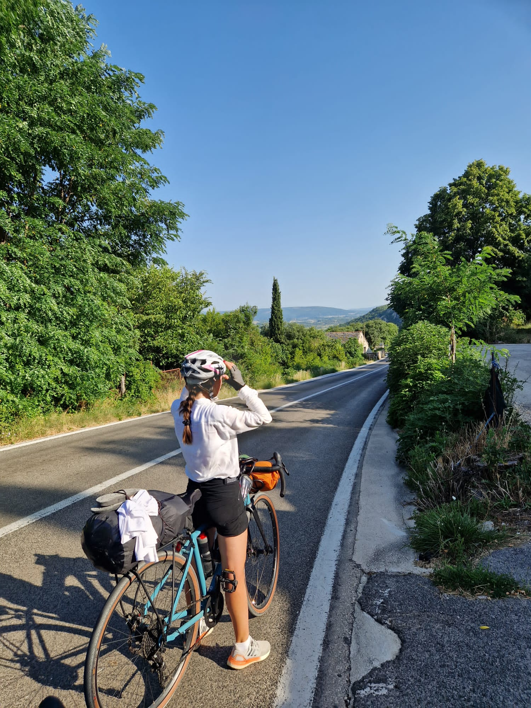
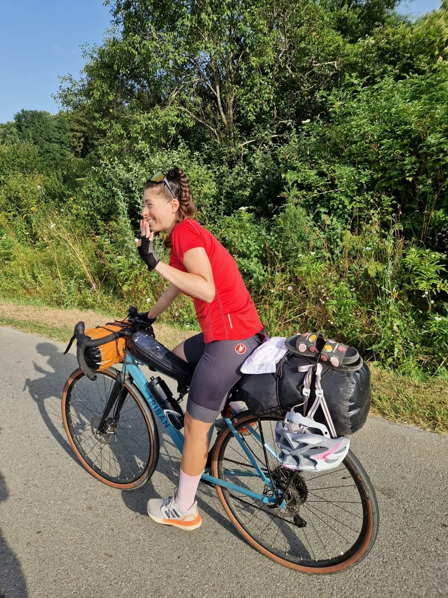
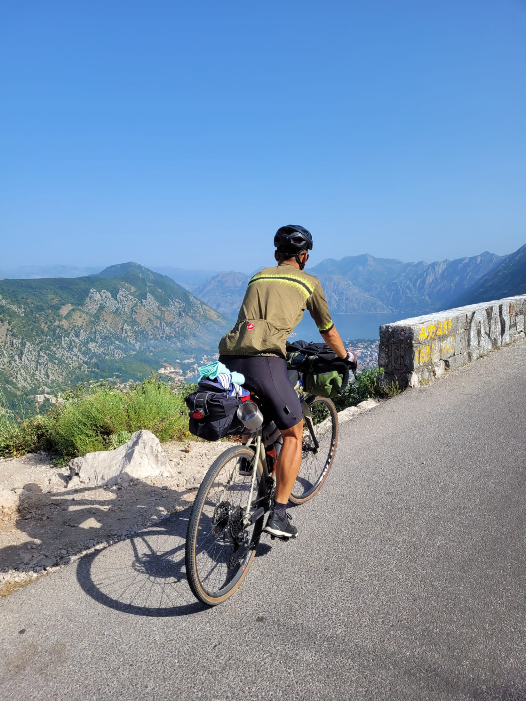
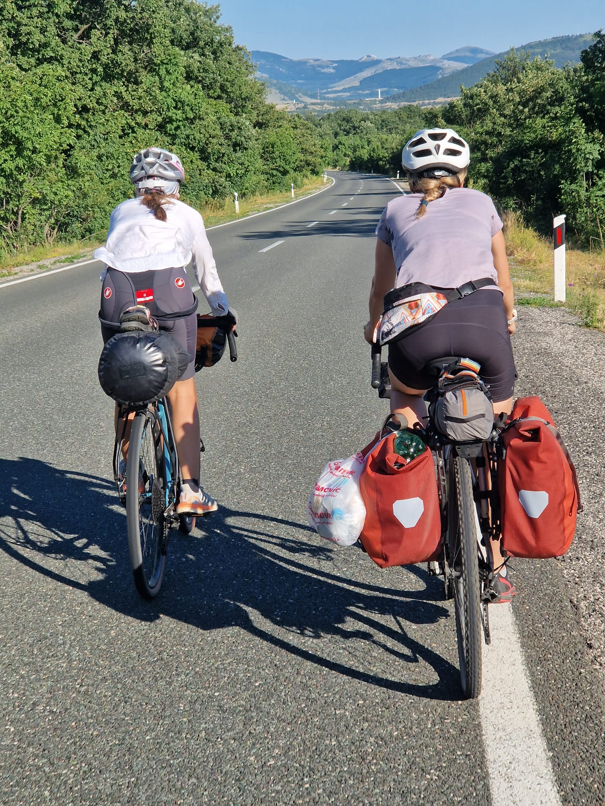
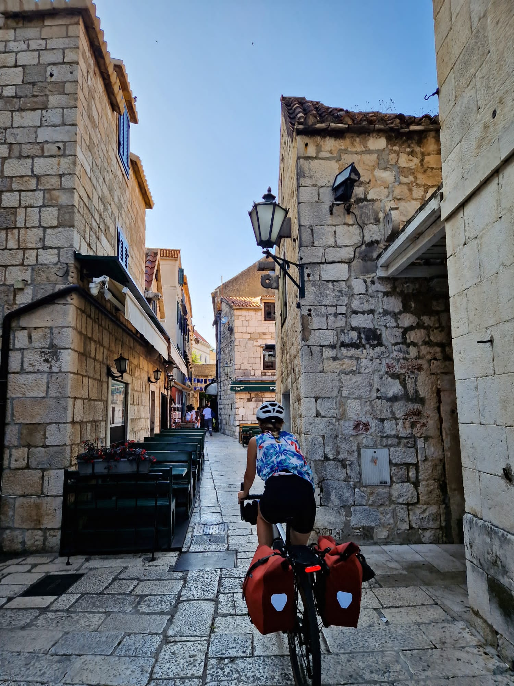
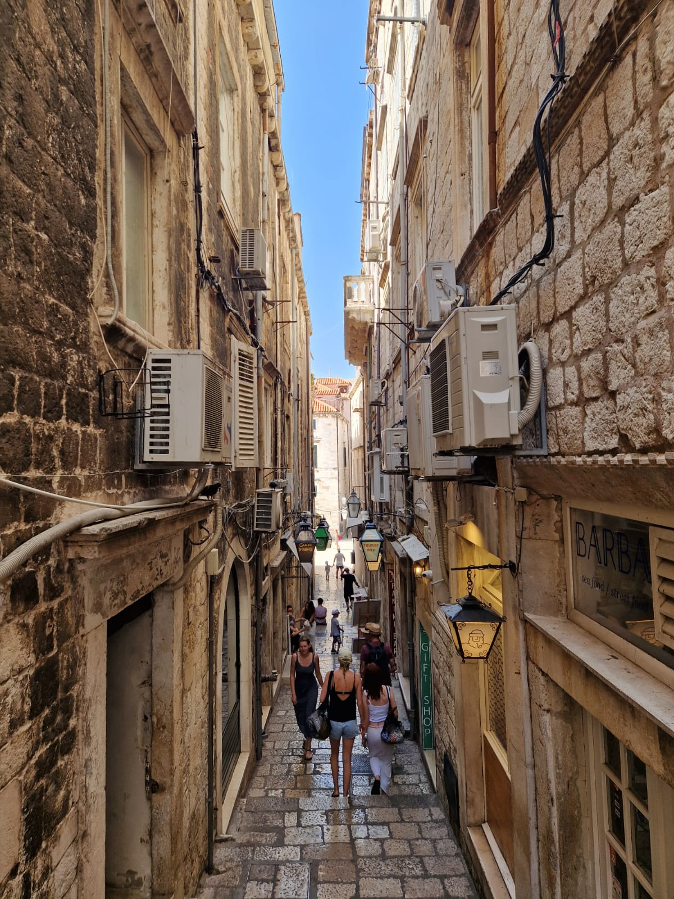
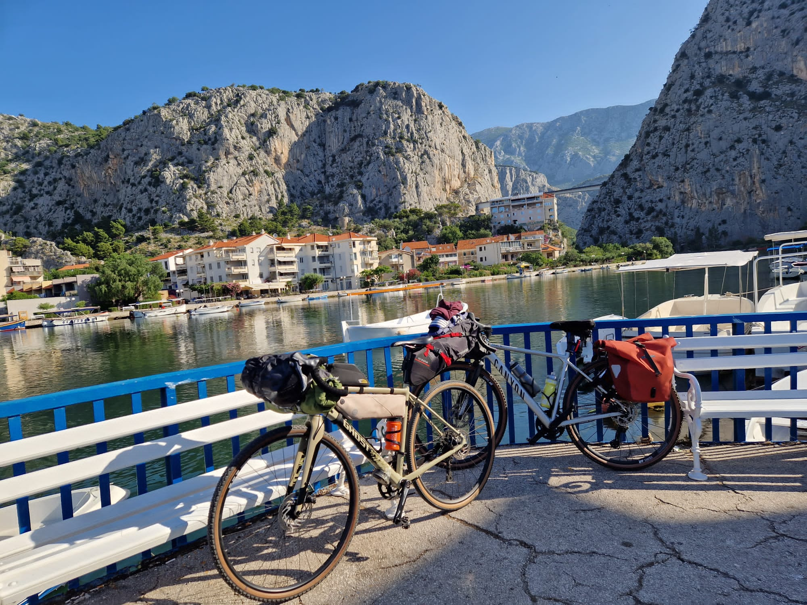

We cycled from Timișoara, Romania, to Split, Croatia. Around a hundred kilometres a day. Six days. With people I had only just met.
I could write a book about that trip — the heat that pinned us to park benches every afternoon, the rhythm that took over once our legs accepted it, the strangers who fed us when we had nothing to give back. This is the longer version. The good days and the hard ones, and a few moments that are still, more than a year later, some of the most vivid memories I have.

The three of us, early on — six days and roughly 600km still ahead, with people I'd met only days before.
Sunflower fields and the first night
They say the first night in a tent is the hardest. They're right.
We camped somewhere random — far from roads, lights, any trace of people. Just a quiet patch of land near a sunflower field, reached by a narrow side road. It felt like a good idea at the time.
The moment we started setting up, the mosquitoes arrived. Fast, aggressive, everywhere. Darkness was already settling in, so everything had to happen quickly, almost mechanically. My friends moved with a calm efficiency I didn't have yet — I was still learning.
By the time we finished, night had fully arrived. And with it, noise. Every sound felt amplified — rustling in the grass, footsteps, voices from somewhere I couldn't see. My legs went numb, like they no longer belonged to me. I lay there with my eyes open, listening, imagining, waiting. I didn't sleep. My first white night.
But strangely, I was still happy to be there.
In the morning I stepped outside, curious instead of afraid. A few metres away, three rabbits were playing in the field — calm, unbothered, maybe the source of all that noise. Or maybe my mind had done the rest. They say rabbits sleep with their eyes open. After that night, I believed it.

Wild camp spots, found late and left early — somewhere in the golden fields of Serbia.
The rhythm of the road
By day two, the trip had a shape. We rode early, from around 7am until noon, trying to cover as much ground as possible before the sun took over. Then it did — harsh, total, impossible to argue with.
Between noon and late afternoon we found shade wherever we could: a city park, the grass, a bench. We'd nap, eat something simple, sometimes allow ourselves a small luxury — a cold lemonade, a place to charge a phone. Around 4:30pm we started again, and the second half of the day always felt lighter. The body had already accepted the effort.
I was almost never hungry, not in the normal sense. What I craved was freshness — water in its most natural form. Watermelon became an obsession. We'd buy one whenever we found it, eat it sitting on a curb, and feel briefly, completely fixed.

Midday, somewhere in Bosnia: find shade, eat something, wait out the heat.
Golden, flat, and strangely calming
Serbia surprised me with its simplicity. Sunflower fields stretched in every direction — golden, quiet, almost hypnotic. On a bike you don't just pass through a place, you absorb it: the smell of dry grass, the small shifts in temperature, the texture of the air.
The beauty wasn't dramatic, just steady. Villages were nearly empty — over three days we saw only a handful of people. Mostly it was us, the road, and the open land. At times it felt like meditation.
Bosnia came and went almost like a transition between worlds — the dry gold slowly turning green, dense and alive, deer crossing in the distance. We didn't stay long. But the shift was enough to feel.
Then came Croatia, and the heat got heavier — pressing down on us with every kilometre. We chased shadows like rewards. Water became everything.

Some days the road just repeats. After a while, that stops being a problem and starts being the point.
The dogs
We were crossing into Croatia for the second time. Out of nowhere, five dogs came at us — fast, aggressive, closing the distance without hesitation. I didn't think. My legs moved before my brain gave any instruction. Adrenaline arrived instantly, flooding everything. I pedalled with a force I didn't know I had.
I could have been completely exhausted a minute before. In that moment, it didn't matter at all.
The person I was riding with managed to push them back, create just enough space. We got through. And just like that it was over — except the feeling, which stayed in my body for a long time after.
What I understood in those seconds: your body holds reserves you never access until it has no choice. Fear unlocks something that effort alone cannot.

Somewhere in Serbia. Six days, ~100km a day, people I'd just met.
The tunnel
Croatian coast roads are beautiful and demanding — serpentines, cliffs, the sea somewhere below. And then we entered a tunnel.
I still had my sunglasses on.
I couldn't see. I could only hear. Engines passing on the left, air shifting around me, the sound of my own wheels. Stopping wasn't possible. My friends had lights, but it barely helped — like lighting a match in the middle of a forest and hoping it would show you the way out.
So I kept going. Pedalling through fear, through noise, through a darkness I couldn't measure, until — light.
We came out the other side. Alive. Shaken. And I felt an overwhelming gratitude that I wasn't expecting — not just for getting through it, but for things I had stopped noticing. Vision. Breath. The simple fact of being able to see the world.
We say we're grateful. It takes something like this to actually feel it.
The Croatian coast
After the tunnel, the coast opened up properly — serpentines, cliffs, the sea somewhere below or beyond sight, depending on the bend. It was beautiful and demanding in equal measure, the kind of road that asks for your full attention and rewards it immediately.
We rode in pairs most of the time, taking turns at the front, trading off who cut through the wind. Conversation thinned out the higher we climbed — eventually it was just breathing, pedal strokes, and the view doing the talking.

Serpentines, cliffs, and the sea below — this is the part of the trip people picture when you say "bikepacking the Croatian coast."

Two of us, somewhere between Bosnia and the coast. This is the best life.
Into Dubrovnik, and the kindness along the way
By the time we reached a small village near the coast, we were tired, dusty, and low on water. We couldn't find a shop, so we asked a few locals if they could refill our bottles.
They looked at us — really looked. Dirty, exhausted, a little lost. And then something beautiful happened. One bottle of water turned into slices of melon. The melon turned into a full meal. The meal turned into cappuccino. Then their kids came home, and suddenly we were part of their evening — talking, laughing, sharing stories, ending with a barbecue together. Complete strangers, connected for a few hours in a way that felt simple and rare.
Dubrovnik itself was a shock after days of empty roads — narrow stone streets, crowds, the sound of suitcases on cobblestones instead of birds. We rode in anyway, panniers and all, weaving between tourists who clearly hadn't expected to share the alley with a loaded touring bike.

Cycling into Dubrovnik's old town, red panniers and all.

A quieter side street, away from the main strip — still no room for a bike, but we made it work.
Fireflies, and choosing to stop
That evening we found a forest to camp in. Dense trees, dry leaves on the ground like a carpet, silence that felt intentional. We stepped into it as if entering another world.
When darkness arrived, the forest came alive. Fireflies — dozens of them, maybe more. Small, quiet lights moving in every direction, surrounding us. It felt unreal. Like something imagined rather than something you were actually standing inside.
We watched without speaking.
Sometime in the middle of the night I woke up — I've always been a light sleeper. I heard something outside. Careful steps. I went out.
A deer. Male, still and alert, standing not far from the tent. Surrounded by fireflies. Lit softly by the moon.
For a moment, everything stood still. No fear. No movement. Just the two of us, in the dark, in a forest that seemed to belong to a different time.
Then it was gone.
That was one of the most beautiful things I have ever seen. And it happened at the end of one of the hardest days. That's the thing about travelling by bike — it strips everything back to the essentials, and then, sometimes, when you least expect it, it gives you something extraordinary in return.
By the time we reached Plitvice Lakes a couple of days later, I knew something my friends didn't yet: I was done. Not unhappy — just deeply, fully tired in a way that sleep hadn't fixed in days. They wanted to keep going, toward Montenegro and eventually back to Romania. I stayed.
It was the first time I'd been on my own on a trip like this. With about 200km left to Split, I rode the rest of the way at my own pace — slower, more honest, with nowhere to be but the next town.

Omiš, not far from Split — the last stretch, alone, and on my own time.
That decision turned out to matter more than the six days that came before it. But that's a different story.